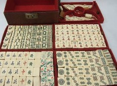
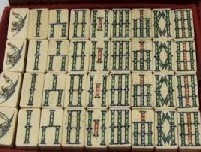
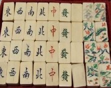

先般、ヤフオクを見ていたら、索子が竹管タイプの骨牌が出品されていた。

竹管タイプは彫りが迫力あるので、σ(-_-)の好み。そこで何セットも所蔵している。

そこでいくら好みであっても、普段ならそのままスルーする。しかし写真をみたとき、花牌が ちと引っかかった。
花牌の８枚には、１枚づつ文字が刻まれている。これを “聯（れん）” と呼んでいるが、「春夏秋冬、梅蘭菊竹」が
一般的。しかし聯の文字が珍しければ珍奇度はアップする。もし一点モノの聯なら、珍奇度はグングン。で アップ
された写真を見ると、赤文字の方は「上江西風」とある。「上江西風」という表現は聞いたことが無いので、これは
たぶん「江上西風」。

しかし もう一つの緑字の方は写真がピンボケ、いくら目をこらしても判然としない....とはいえ「江上清風 山間明月」
という聯はたまに見かけるが、「江上西風」は初見。マニア？としては それだけでも手が伸びる（笑） 緑字の方は、
字がハッキリしないが どうやら「山間明月」ではなさそうだ。（これはこれは....）と思って、即 入札した。
ぶじ落札して現物が届いた。どれどれと緑字を見ると「景寿佳湖」と並んでいた。よく分からないが、これはたぶん
「湖景佳寿」（上海近くの常州市に「湖景佳苑」という名前のホテルもある）とある。
竹管タイプの例にもれず、牌全体もしっかりしている。そして「江上西風 湖景佳寿」という花牌は、σ(-_-)の知る限り
では一点モノ。（うん、これは掘り出し物だった）と、一人満足する今日この頃(^-^；
|